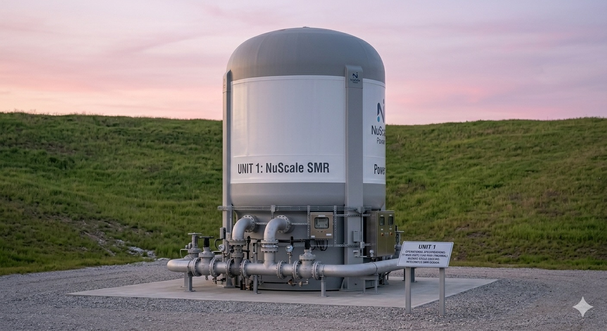
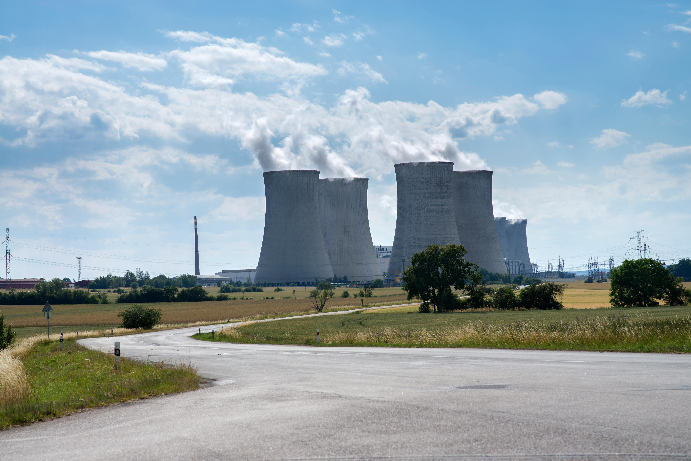
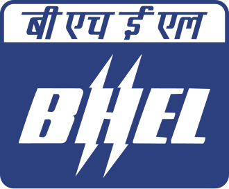
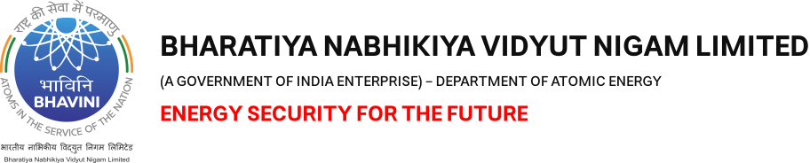

सुविकल्प: Mine Repurposing Tool
Select factors and sub-factors to discover suitable repurposing options for your mining site
![Coal Controller Organisation emblem]()


This pillar covers the project concept, strategic rationale, critical siting requirements, site suitability assessment matrix, and indicative scale matrix for SMR development on closed mine or retired coal-industrial land. Nuclear safety, geological stability, regulatory approval and authorized institutional capacity are the core foundations.
This concept proposes the development of a Small Modular Reactor (SMR) based clean-energy campus within or around a closed, reclaimed, or repurposed coal mine area as part of a broader post-mining land-use, energy-transition, industrial-repowering and regional economic diversification strategy.
The objective is to transform suitable closed mine land, retired coal-industrial land, associated power-plant areas, workshops, substations, transmission corridors, water infrastructure, rail/road logistics and controlled industrial buffers into a nuclear-energy repurposing asset that supports firm low-carbon power, grid reliability, industrial heat, clean hydrogen, data-centre power, desalination/water treatment where feasible, skilled employment, long-term concession revenue and a visible transition from coal-based extraction to advanced clean-energy infrastructure.
This is a highly selective, regulator-led repurposing option — not a universal one. A closed coal mine is suitable for an SMR project only where it can satisfy critical requirements relating to nuclear siting acceptability; geotechnical stability, subsidence control and seismic suitability; adequate land area, controlled boundary and emergency-planning feasibility; cooling-water availability or technically acceptable dry/hybrid cooling; grid evacuation; access for heavy equipment and nuclear-grade components; compliance with atomic-energy, radiation-safety, nuclear-security and environmental regulations; spent-fuel, radioactive-waste and decommissioning arrangements; environmental clearance, public consultation and social acceptance; and long-term institutional capability through authorized nuclear entities and licensed operators.
SMRs are increasingly relevant because large renewable-energy deployment requires firm, dispatchable and low-carbon power. Unlike solar and wind, SMRs can provide high-capacity-factor electricity and may support industrial decarbonisation, round-the-clock power, process heat and grid stability.
An SMR project can be a strong repurposing option where a closed coal mine/coal-industrial site offers a combination of:
Research and policy literature supports the possibility of repowering retired coal-energy sites with advanced nuclear technologies where siting, safety and regulatory conditions are satisfied. Coal-to-nuclear studies highlight that existing transmission, cooling systems, roads, workforce and community identity as an energy-producing region may reduce some development barriers. However, closed mines introduce additional concerns such as subsidence, underground voids, slope instability, mine-water contamination, seismicity, public trust and emergency-planning constraints.
The following matrix provides a structured checklist for assessing the suitability of the proposed site for the selected repurposing option. It identifies the key physical, technical, environmental, infrastructure, legal, and owner-side readiness parameters that should be reviewed before the project is advanced to the next stage of development. The purpose of this matrix is to help the project owner understand existing site conditions, technical requirements, potential constraints, and preparatory actions required before feasibility studies, approvals, or tendering are initiated.
| Main Category | Sub-category | What to Assess / Prepare | Why It Matters for SMR | Typical Owner-Side Readiness |
|---|---|---|---|---|
| Land / Area | Total land area | Gross land, usable nuclear campus area, exclusion/controlled zones, switchyard, cooling system, emergency facilities, security buffer and expansion area | Determines whether nuclear island, balance-of-plant, cooling, access and safety zones can be accommodated | Land map and usable-area estimate |
| Land / Area | Mine void separation | Distance from underground workings, pits, shafts, galleries, subsidence zones, abandoned tunnels and highwalls | Nuclear facilities require stable land and must avoid mine-instability risks | Mine-void and no-go zone map |
| Land / Area | Geotechnical stability | Rock/soil strength, settlement, bearing capacity, liquefaction potential, old workings, slope stability and foundation condition | Reactor and safety-related structures require high geotechnical reliability | Geotechnical screening plan |
| Land / Area | Seismic suitability | Regional seismicity, fault proximity, ground-motion parameters and historical events | Nuclear siting requires conservative seismic assessment | Seismic-screening note |
| Land / Area | Flood and drainage safety | Flood level, stormwater routing, mine-water overflow, drainage channels, waterlogging and extreme rainfall | Flooding can affect nuclear safety, access and emergency systems | Flood and drainage-risk note |
| Site Context | Grid proximity | Transmission lines, substations, switchyard, voltage level, evacuation capacity and grid stability | SMR viability depends on reliable power evacuation and grid integration | Grid-evacuation feasibility note |
| Site Context | Cooling-water context | River, reservoir, mine water, treated wastewater, cooling pond, dry-cooling or hybrid-cooling feasibility | Cooling approach affects siting, cost, water impact and approvals | Cooling-water feasibility note |
| Site Context | Population and settlement | Nearby villages, towns, schools, hospitals, industries and emergency-response access | Nuclear siting requires careful population and emergency planning | Population-interface note |
| Nuclear & Technical | Nuclear island siting | Reactor building, containment, safety systems, auxiliary systems and restricted zone | Core safety-related systems need secure, stable and compliant siting | Nuclear-island screening |
| Nuclear & Technical | Fuel and waste interface | Fuel receipt, spent-fuel storage, radioactive waste, transport and safeguards as per law | Nuclear fuel and waste are strictly regulated | Fuel/waste compliance note |
| Nuclear & Technical | Security systems | Physical protection, surveillance, access control, barriers and response coordination | Nuclear facilities require high security standards | Security concept note |
| Nuclear & Technical | Emergency systems | Emergency control centre, alarms, backup systems, evacuation coordination and public communication | Required for nuclear emergency preparedness | Emergency-readiness concept |
| Safety & Compliance | Nuclear safety | Defence-in-depth, passive safety, safety analysis and regulator-approved design basis | Central requirement for project approval and operation | Nuclear-safety screening |
| Safety & Compliance | Radiation protection | Shielding, monitoring, controlled access, worker dose management and environmental monitoring | Protects workers, public and environment | Radiation-protection concept |
| Safety & Compliance | Emergency planning | On-site and off-site plans, evacuation routes, medical support and district coordination | Public confidence and regulatory approval depend on readiness | Emergency-planning pathway |
| Environmental & Social | Mine contamination | Coal dust, hydrocarbons, heavy metals, acid mine drainage, contaminated soil and mine water | Nuclear siting should not be combined with unresolved contamination risks | Contamination-screening note |
| Environmental & Social | Community acceptance | Public perception, safety concerns, employment expectations, trust and grievance mechanisms | Nuclear projects require strong social licence | Stakeholder consultation note |
| Legal / Approvals | Nuclear approvals | Atomic-energy authorization, siting consent, construction consent, commissioning and operating licence | Core legal requirement for SMR development | Nuclear-approval pathway |
| Legal / Approvals | Mine closure status | Closure-plan compliance, reclamation obligations, restricted zones and post-mining end-use permissibility | Determines whether nuclear-energy reuse is legally possible | Closure-linkage note |
The following matrix presents an indicative relationship between available site area, project scale, technical configuration, and likely development potential. It is intended to support preliminary planning by helping the project owner identify the appropriate scale and configuration for the proposed repurposing option. The values and recommendations are indicative and should be refined through detailed feasibility studies, site surveys, engineering assessments, and relevant technical and commercial evaluations.
| Land Area | Indicative Scale | Recommended Project Scale | Likely Configuration | Typical Use Case |
|---|---|---|---|---|
| 10–25 ha | Nuclear-readiness / demonstration support campus | No reactor in first phase; training, monitoring, research, emergency-awareness and non-nuclear support facilities | Nuclear training centre, energy-transition education centre, environmental monitoring lab and grid-study support | Early-stage preparation, community awareness, workforce transition and feasibility support |
| 25–75 ha | Micro / small SMR enabling campus | Up to about 50–100 MWe class, subject to approved technology and regulator acceptance | Single small module, compact balance-of-plant, switchyard, dry/hybrid cooling and strict security zone | Captive industrial power, remote industrial load, demonstration project or research-linked deployment |
| 75–150 ha | Small mine-area SMR project | About 100–300 MWe class, or one BSMR-type module where legally approved | Reactor module, turbine island, cooling system, switchyard, training centre and emergency facilities | Grid supply, industrial repowering, data-centre supply or clean industrial power |
| 150–300 ha | Medium multi-module SMR campus | 300–600 MWe phased development | Two or more modules, shared cooling, shared control/support facilities, high-voltage evacuation and industrial integration | Coal-to-nuclear repowering, regional grid support and clean industrial energy hub |
| 300 ha+ | Flagship nuclear clean-energy park | 600 MWe+ phased multi-module development with industrial co-location | Multi-module SMR park with grid, hydrogen, data centre, industrial heat or clean-energy cluster | State-level clean firm power, industrial decarbonisation and just-transition anchor |
This pillar presents the implementation options for SMR mine-area projects, their comparative assessment across key decision parameters, and the model-wise responsibility and risk allocation logic. Nuclear law determines which models are legally permissible; institutional capability and authorized nuclear entity involvement are essential in all cases.
The following table outlines the possible implementation models that may be considered for developing the proposed repurposing project. These models differ in terms of ownership structure, funding responsibility, private sector participation, operational control, and long-term risk allocation. The purpose of this table is to help the project owner compare broad development routes and select an implementation approach that aligns with its financial capacity, institutional preference, risk appetite, and long-term asset management objectives.
| Main Group | Model | Core Feature | Broad Suitability |
|---|---|---|---|
| Owner-led | EPC | The authorized nuclear owner funds, develops and retains ownership while qualified contractors undertake design, engineering, procurement and construction under nuclear regulatory control | Suitable only where an authorized nuclear entity has full funding, licensing capability, technical governance and long-term operating responsibility |
| Owner-led | EPC + O&M / Facility Management | Authorized owner funds and owns the SMR; specialized nuclear O&M, security, maintenance and facility-management agencies support operation under licensed oversight | Suitable where owner retains strategic control but requires specialist nuclear operations, maintenance, security and support services |
| Developer-led / PPP | BOOT | Qualified developer finances, builds, owns and operates the SMR during a concession period and transfers at end, subject to nuclear law | Suitable only if national law permits and the developer is an authorized nuclear entity or works under an authorized structure |
| Developer-led / PPP | BOO | Qualified nuclear developer finances, develops, owns and operates the SMR long-term without mandatory transfer | Suitable only where long-term private/institutional nuclear ownership is legally permitted and safety responsibility is clearly licensed |
| Developer-led / PPP | DBFOT | Concessionaire designs, builds, finances, operates and transfers the SMR under a structured PPP arrangement with nuclear-regulatory approvals | Potentially suitable for large SMR parks if the legal framework permits private participation under authorized nuclear oversight |
| Developer-led / PPP | Concession / Lease-Develop-Operate | Mine owner provides land, access and selected enabling infrastructure; authorized nuclear developer develops, operates and commercialises the SMR under defined concession terms | Suitable where mine owner wants to retain land control but cannot directly own or operate nuclear assets |
| Mixed | Hybrid | Mine owner supports land, grid, access, water, community transition and enabling works; authorized nuclear entity / public agency / approved developer undertakes nuclear development and operation | Particularly suitable — nuclear projects require public oversight, specialized licensing, long-term safety control and risk sharing |
The following comparative assessment evaluates the major implementation models across key decision parameters such as investment requirement, ownership control, financing responsibility, contractual complexity, risk transfer, and long-term economic benefit. This matrix is intended to support early-stage decision-making by highlighting the relative strengths and limitations of each model. The final choice of model should be guided by the specific circumstances of the project, including its scale, commercial viability, applicable policy framework, and the owner's institutional preference.
| Evaluation Parameter | EPC | EPC+O&M | BOOT | BOO | DBFOT | Concession / LDO | Hybrid |
|---|---|---|---|---|---|---|---|
| Upfront investment by Mine Owner | Very High (if authorized) | Very High (if authorized) | Low to Moderate | Low | Low to Moderate | Low to Moderate | Varies |
| Need for private financing | Low | Low | High | High | High | Moderate to High | Varies |
| Long-term control over SMR asset | High (if authorized) | High (if authorized) | Moderate (improves after transfer) | Low | Moderate to High | Moderate through concession terms | High through authorized nuclear structure |
| Contractual complexity | High | Very High | Very High | Very High | Very High | Very High | Very High |
| Nuclear safety responsibility | Licensed owner/operator | Licensed owner/operator | Licensed developer/operator | Licensed developer/operator | Licensed concessionaire | Licensed concessionaire | Licensed nuclear entity |
| Need for nuclear operations expertise | Extremely High | Extremely High | Extremely High | Extremely High | Extremely High | Extremely High | Extremely High |
| Suitability for phased modular expansion | Moderate | High | High | High | High | High | Very High |
| Construction / implementation timeline risk | Very High | Very High | Very High | Very High | Very High | Very High | Very High |
| Suitability for local employment and service ecosystem | High | Very High | High | Moderate to High | High to Very High | High to Very High | Very High |
| Overall suitability for mine-area SMR | Limited / conditional | High (if authorized structure exists) | Conditional | Conditional | High but legally complex | Very High (if legally permitted) | Very High / Most practical |
The following table explains how major project responsibilities are typically allocated under different implementation models. It covers key functional areas such as site availability, financing, design and construction, regulatory approvals, operation and maintenance, revenue collection, asset ownership, and end-of-term transfer. This helps clarify the respective roles of the project owner, private developer, EPC contractor, operator, or concessionaire, and supports the preparation of tender documents and contractual structures.
| Responsibility Area | EPC | EPC+O&M | BOOT | DBFOT | Concession / LDO | Hybrid |
|---|---|---|---|---|---|---|
| Site / Land Availability | Owner | Owner | Usually owner / authority | Usually owner / authority | Owner / authority | Variable |
| Mine Closure Compatibility | Owner | Owner | Shared | Shared | Shared | Shared |
| Nuclear Legal Eligibility | Owner / authorized nuclear entity | Owner / authorized entity | Developer / authorized entity | Concessionaire / authorized entity | Authorized concessionaire | Authorized nuclear partner |
| Financing | Owner | Owner | Private / authorized developer | Private / public concessionaire | Concessionaire, sometimes with owner support | Shared / variable |
| Nuclear Licensing | Authorized owner/operator | Authorized owner/operator | Authorized developer/operator | Authorized concessionaire | Authorized concessionaire | Authorized nuclear entity |
| Operations | Licensed owner | Licensed operator / O&M agency under regulatory oversight | Developer during concession | Concessionaire during concession | Concessionaire / operator | Licensed nuclear entity |
| Waste and Spent-Fuel Management | Licensed owner / national framework | Licensed owner / operator | Licensed developer / national framework | Concessionaire / national framework | Concessionaire / national framework | Authorized nuclear entity |
| Revenue Realization | Owner | Owner or operator as per contract | Developer during concession | Concessionaire during concession | Concessionaire as per concession | Shared as per agreement |
| Transfer at End of Term | No | No | Yes (if legally permitted) | Yes | As agreed and legally permitted | As agreed |
This pillar presents the funding logic, revenue generation mechanisms, and local livelihood potential for SMR mine-area projects under different implementation models. Given the very high CAPEX and long project life, revenue certainty through PPAs, capacity contracts or regulated tariffs is critical. The Hybrid model generates the strongest community and employment outcomes.
The following table presents the broad funding logic for each implementation model. It explains who is expected to finance the project, the level of owner-side funding requirement, and the commercial rationale behind each structure. This section is intended to help the project owner assess whether the project is more suitable for owner-funded development, private investment, public-private partnership, lease or concession structure, or a hybrid funding arrangement.
| Model | Primary Funding Source | Owner Funding Requirement | Commercial Logic |
|---|---|---|---|
| EPC | Authorized owner's budget, sovereign support, nuclear-sector funding, institutional debt, green finance | Very High | Authorized owner directly finances and develops the SMR, retains full ownership and captures long-term strategic and commercial benefits. Suitable only where owner has legal eligibility, capital strength, nuclear governance and operating capability. |
| EPC + O&M | Authorized owner's budget, nuclear-sector funding, public-sector support, regulated tariff recovery; O&M funded through power revenue or capacity payments | Very High | Owner finances and retains ownership while specialized nuclear O&M and facility agencies support safe operation under licensed oversight. |
| BOOT | Qualified developer equity, project finance, strategic investors, sovereign support, utility contracts, industrial offtake, green finance | Low to Moderate | Developer finances, builds, owns and operates during concession, recovering investment through power sales, capacity charges, industrial power contracts and grid services before transferring the asset. |
| BOO | Qualified nuclear developer equity, private/institutional debt, utility investment, strategic investors, industrial offtake | Low | Developer finances, owns and operates long-term. Mine owner benefits mainly through land lease, concession charge, infrastructure-use fee and local economic activity. |
| DBFOT | Qualified concessionaire equity, project finance, sovereign or state support, utility offtake, industrial users, clean-energy finance | Low to Moderate | Private/public concessionaire designs, builds, finances, operates and transfers the SMR. Investment recovery through regulated tariff, PPA, capacity payments, industrial contracts and grid services. |
| Concession / LDO | Qualified nuclear concessionaire investment, authorized nuclear entity, utility/industrial anchor, institutional finance | Low to Moderate | Mine owner provides land, access, grid/water facilitation and development rights; authorized developer invests in siting, licensing, construction and commercialisation. Owner benefits through lease rentals, concession fees, milestone payments and revenue share. |
| Hybrid | Shared funding from mine owner, authorized nuclear entity, government, utility, industrial offtaker, green finance and private investment where legally permitted | Variable | Mine owner supports land, closure-linkage, infrastructure, transmission facilitation and community engagement; nuclear partner funds reactor technology, licensing, construction and operation. Particularly suitable where strategic clean-energy value is high but nuclear risk must remain with authorized specialists. |
The following table explains how revenue may be generated under different implementation models and identifies who is likely to receive the principal project income. It also describes the nature and extent of the financial benefit available to the project owner, whether through direct project revenue, cost savings, lease income, concession fees, revenue sharing, service charges, or eventual asset transfer. This comparison is intended to support the selection of a commercially appropriate model for the proposed repurposing project.
| Model | How Revenue is Generated | Who Receives Main Revenue | Owner's Financial Benefit |
|---|---|---|---|
| EPC | Owner-led sale of electricity, regulated tariff, capacity charge, industrial power supply, clean firm power contracts, grid services, process heat, hydrogen support or data-centre power | Authorized owner | Full financial benefit from operational revenues, subject to owner bearing full capital cost, licensing risk, construction risk, operating responsibility, nuclear liability and long-term decommissioning burden |
| EPC + O&M | Electricity sale, capacity payments, PPA, industrial offtake, clean-energy supply, grid services and process-heat revenue, net of O&M/facility-management payments | Authorized owner (after O&M payments) | High financial benefit — owner retains core revenue rights and asset ownership while paying specialist agencies for operation, maintenance, safety and facility support |
| BOOT | PPA, capacity charge, industrial power contracts, grid services, firm clean power and data-centre power during concession term | Developer / concessionaire during concession | Financial benefit generally indirect — through lease rent, concession fee, revenue share, local economic uplift and transfer of the SMR asset at end of concession where legally permitted |
| BOO | Long-term private/institutional operation including electricity sale, industrial contracts, capacity payments and clean-energy supply | Developer / private owner | Limited direct financial benefit — generally through land lease, fixed concession charges, annual fee, negotiated local benefits or infrastructure-use payments |
| DBFOT | Structured concession revenue including regulated tariff, PPA, capacity payment, industrial offtake, grid support and permitted clean-energy monetisation | Developer / concessionaire during concession | Benefit through concession fee, lease income, revenue sharing, possible performance-linked payments and transfer of asset at end of concession where legally permitted |
| Concession / LDO | Lease/concession-based SMR operation including power sales, PPA, industrial supply, grid services, clean firm power and process-heat contracts | Concessionaire / operator as per agreement | Financial benefit through lease rentals, concession fee, development premium, annual payment, revenue share, enhanced land value and broader regional economic benefits |
| Hybrid | Combination of power sale, capacity payment, industrial offtake, public support, clean-energy contracts, grid services and shared commercial income | Shared as per agreement | Variable financial benefit depending on ownership, funding, offtake, risk allocation, public support, nuclear operator role and commercial terms |
The following table assesses the likely local livelihood and employment potential of each implementation model. It considers the extent to which each model can support construction-phase jobs, long-term operational employment, local procurement opportunities, skill development, community participation, and associated support services. This section is particularly relevant where the repurposing project is expected to contribute to post-mining or post-operational economic transition and sustained local community benefit.
| Model | Local Job Potential | Why | Overall Suggestibility for Local Livelihood |
|---|---|---|---|
| EPC | High | Construction can generate employment in civil works, electrical systems, security, transport, logistics, utilities and support services. Long-term jobs arise in operations support, maintenance, security, emergency services and administration, though many nuclear roles require advanced certification. | High |
| EPC + O&M | High to Very High | Supports construction jobs and sustained long-term technical and support roles under owner control, including training pathways for local youth, mine workers, technicians and service providers where safety and qualification requirements are met. | Very High |
| BOOT | High | Developer-led construction and operation can create long-term jobs during the concession period. Local benefits can be strong if concession terms require local training, apprenticeships, vendor inclusion and transition of eligible mine/power workers. | High |
| BOO | Moderate to High | Can create significant jobs, but local livelihood depends heavily on private operator staffing policies, automation level, security protocols and contractual local-employment obligations. | Moderate to High |
| DBFOT | High to Very High | Formal PPP structure can include local hiring, training, apprenticeship, vendor participation, emergency-response capacity, technical scholarships and community-development obligations. | Very High |
| Concession / LDO | High to Very High | Supports local employment through construction, maintenance, transport, security, facility services, emergency support, training centres and local supply chains, provided concession terms mandate local inclusion. | Very High |
| Hybrid | Very High | Can combine public transition objectives with authorized nuclear expertise, allowing explicit provisions for worker retraining, technical education, women's employment, local services, scholarships, emergency-response training and regional industrial development. | Very High / Highly Suitable |
The following combined comparison brings together three important dimensions of project structuring: revenue potential, owner-side financial benefit, and local livelihood generation. It provides a consolidated view of how each implementation model performs across commercial, institutional, and community-development perspectives. This matrix is intended to support balanced decision-making where the objective extends beyond financial return to include sustainable site reuse and long-term local economic benefit.
| Model | Owner Profitability | Local Job Creation | Overall Comment |
|---|---|---|---|
| EPC | High — owner retains full revenue after capital repayment | Moderate to High | Suitable where the owner has funding capacity and seeks full control over the asset |
| EPC + O&M | High — strong ongoing revenue net of O&M costs | High to Very High | Best for owners who can fund development and want sustained control with professional management |
| BOOT | Moderate — income through lease, concession fee, or transfer value | High | Suitable where private financing is needed; owner benefits indirectly and gains the asset at end of concession |
| BOO | Low to Moderate — primarily through lease or royalty income | Moderate to High | Suitable where long-term private ownership is acceptable and the owner wishes to retain land rights |
| DBFOT | Moderate to High — through lease, concession fee, and transfer | High to Very High | Strong PPP structure for larger projects requiring private investment and structured public participation |
| Concession / LDO | Moderate — through concession fee and revenue-sharing arrangement | High to Very High | Highly suitable where the owner wants to retain land while outsourcing commercial activation |
| Hybrid | Variable to High — depends on structure and revenue-sharing terms | Very High | Most suitable where public value, community benefit, and commercial viability are all required |
This pillar identifies the critical owner-side preparatory actions that must be completed before issuing the first RFP, and the principal post-award activities to be undertaken by the selected developer, concessionaire or EPC contractor. Nuclear siting, regulatory pathway, mine-safety mapping and geotechnical screening are absolute pre-requisites before any bid process can begin.
The following section identifies the key owner-side preparatory actions that should ideally be completed before issuing the first Request for Proposal. These actions are aimed at reducing uncertainty for prospective bidders, improving project bankability, clarifying site availability, identifying approval pathways and risks, and defining the technical and commercial scope of the project. Completing these preparatory steps before tendering can improve bid quality, attract credible responses, and reduce the risk of delays during project implementation.
Before issuing an RFP for an SMR-based mine-repurposing project, the mine owner should prepare the following in priority order:
The following section lists the principal activities that may be undertaken by the selected contractor, developer, concessionaire, operator, or implementation agency after award of the project. These activities generally include detailed site investigations, engineering design, statutory submissions and approvals, equipment procurement, construction, commissioning, operational planning, staff training, and performance monitoring. The distinction between pre-RFP owner preparedness and post-award implementation responsibilities helps ensure an appropriate and efficient allocation of effort across the project development cycle.
After award, the selected concessionaire / developer / EPC contractor / O&M agency can take up the following activities in chronological order:
This pillar presents the indicative implementation pathway, recommended way forward with preferred models, key references, and glossary of abbreviations for SMR mine-area repurposing projects. The Hybrid model is recommended as the primary approach, followed by Concession/LDO and DBFOT, reflecting the unique nuclear safety, regulatory and institutional requirements of this category.
The following implementation pathway presents a practical high-level sequence for advancing the proposed repurposing concept from initial approval through to project execution and long-term operation. It outlines the broad stages of concept approval, preliminary studies, model selection, bid preparation, procurement, detailed design, statutory approvals, construction, commissioning, and ongoing operation. This pathway is indicative and should be adapted to reflect the specific complexity, regulatory requirements, financing structure, and site conditions applicable to the project.
The following way forward summarizes the preferred development approach for the proposed repurposing option, based on the assessment presented in PRISM (Post Mining Repurposing Implementation and Strategy Models). It identifies the most suitable implementation models in order of preference, highlights key technical and due-diligence considerations, and outlines the recommended next steps and broad development logic. This section is intended to guide internal decision-making and support the project owner in progressing from concept-stage evaluation toward feasibility assessment, project structuring, regulatory approvals, and implementation planning.
Preferred Models (in order of suitability):
Why Hybrid is preferred: An SMR project in a closed mine area requires a combination of mine-owner land control, public oversight, authorized nuclear technical capability, regulatory approval, long-term safety governance, grid integration and community transition planning. The mine owner can provide land, closure-linkage, access, enabling infrastructure and local transition support, while an authorized nuclear entity / utility / qualified developer carries nuclear design, licensing, construction, operation and compliance responsibility.
Concession / LDO is also suitable where the mine owner wants to retain land control but allow an authorized nuclear developer or utility to invest, build, operate and commercialise the SMR under strict concession conditions.
DBFOT is suitable for larger SMR parks where long-term concession structuring, private/public finance, industrial offtake, grid integration and eventual transfer are legally and institutionally feasible.
Secondary option: EPC + O&M may be used only where the owner itself is an authorized nuclear entity or where a public-sector nuclear owner develops the project with specialist operations and facility-management support.
Recommended knockout screening: Apply knockout criteria first — legal permissibility, authorized nuclear partner, stable land, mine-hazard separation, cooling feasibility, grid evacuation, emergency-planning feasibility, environmental acceptability and community acceptance. Only passing sites should move to nuclear pre-feasibility, regulator engagement, market sounding and implementation structuring.
| Abbreviation | Full Form |
|---|---|
| SMR | Small Modular Reactor |
| BSMR | Bharat Small Modular Reactor |
| MWe | Megawatt Electric |
| MWt | Megawatt Thermal |
| PPA | Power Purchase Agreement |
| EPC | Engineering, Procurement and Construction |
| O&M | Operation and Maintenance |
| FM | Facility Management |
| BOOT | Build, Own, Operate, Transfer |
| BOO | Build, Own, Operate |
| DBFOT | Design, Build, Finance, Operate, Transfer |
| PPP | Public-Private Partnership |
| RFQ | Request for Qualification |
| RFP | Request for Proposal |
| DPR | Detailed Project Report |
| CAPEX | Capital Expenditure |
| OPEX | Operating Expenditure |
| RoW | Right of Way |
| I&C | Instrumentation and Control |
| TDS | Total Dissolved Solids |
| OHS | Occupational Health and Safety |
| PPE | Personal Protective Equipment |
| BARC | Bhabha Atomic Research Centre |
| NPCIL | Nuclear Power Corporation of India Limited |
| DAE | Department of Atomic Energy |
| AERB | Atomic Energy Regulatory Board |
| CCO | Coal Controller Organisation |
| IAEA | International Atomic Energy Agency |
| NRC | Nuclear Regulatory Commission (U.S.) |
| DOE | Department of Energy (U.S.) |
| NASEO | National Association of State Energy Officials |
| NEA | Nuclear Energy Agency (OECD) |
| OECD | Organisation for Economic Co-operation and Development |
| ESG | Environmental, Social and Governance |
| CSR | Corporate Social Responsibility |
Links open external websites. Coal Controller Organisation does not endorse third-party content.
.gif)




Disclaimer: Inclusion of an agency on this list does not constitute endorsement, empanelment, or recommendation by the Coal Controller Organisation or the Ministry of Coal, Government of India. Mine owners and project proponents are advised to conduct their own due diligence process before engaging any agency.
Disclaimer: Inclusion of an expert does not constitute endorsement, empanelment, or recommendation by the Coal Controller Organisation or the Ministry of Coal, Government of India. Users are advised to independently verify credentials and suitability before engaging any individual.